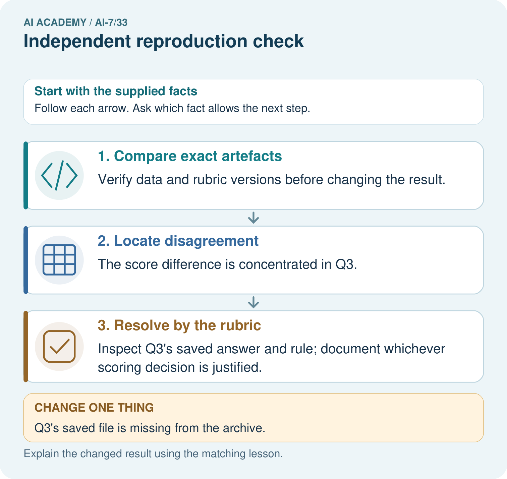
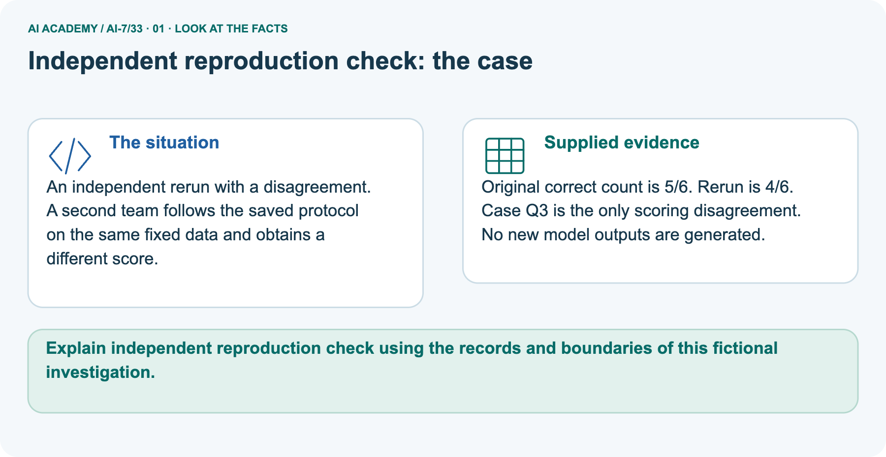
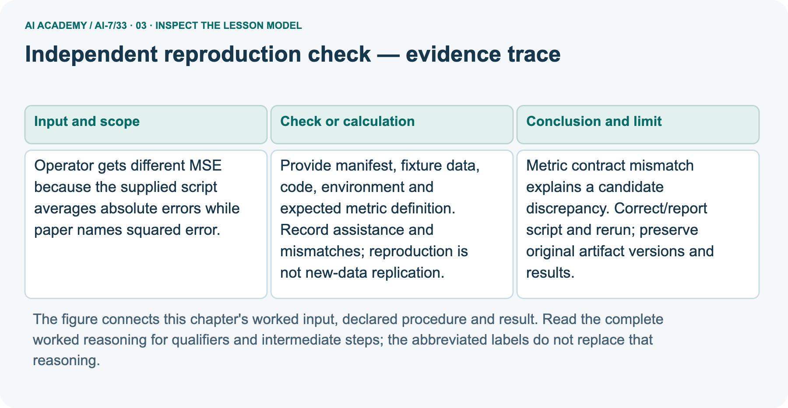
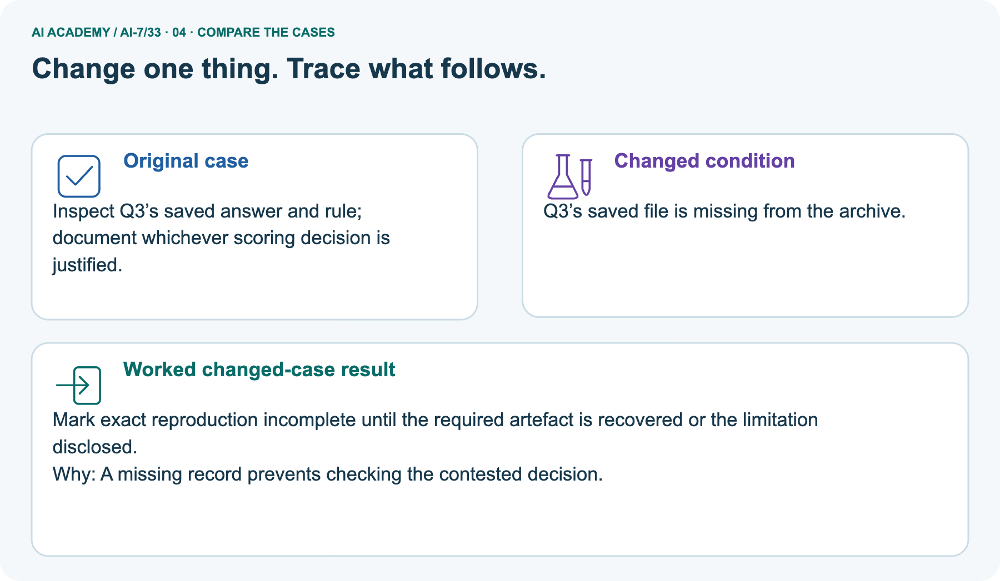
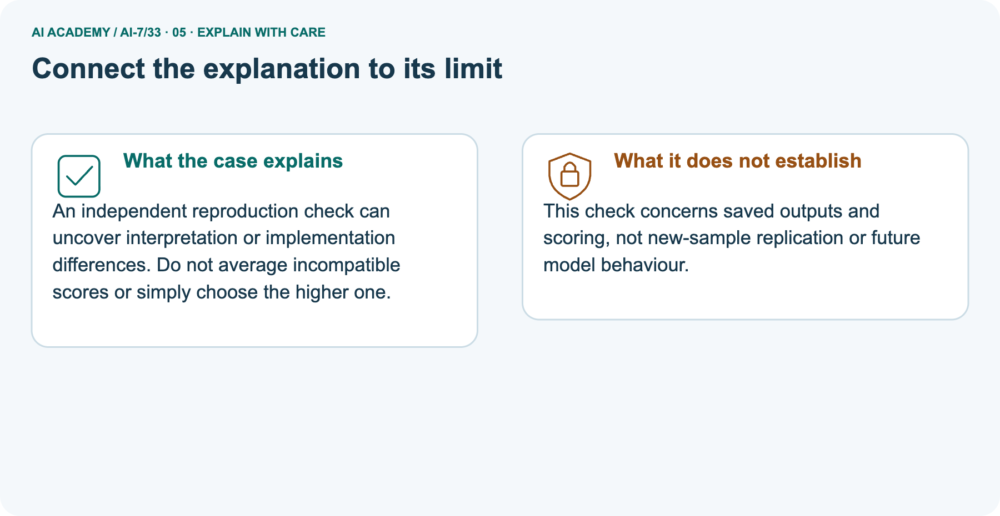
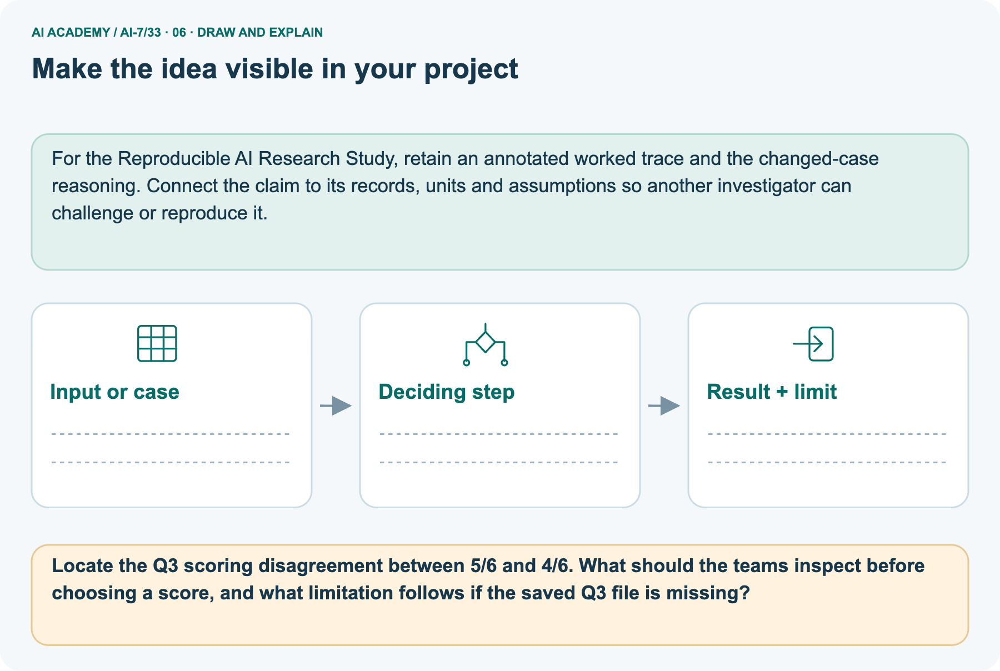

AI Academy · Level 7 · Grade 12 · Week 33 · Workbook
Independent reproduction check
Learn to understand, design, build, test and explain AI systems responsibly.
Project: Reproducible AI Research Study
THE CONNECTED WEEK
One complete research-case evidence record.
Resolve metric and scoring disagreements from artifacts without inventing a successful reproduction.
Keep one habit: Recall → W1–W3/W5 → independent case → project evidence → feedback and delayed return.
Main lesson · Section 1
Recall · Retrieve before notes
Keep this task’s inputs,rule and response together.
Complete task and evidence
Try the recall before opening notes. Then use a different colour or a labelled second line to correct your explanation.
Without opening the old lesson, explain one key idea from Peer review and response. Give an example and a mistake that the idea helps you avoid.
Without opening the old lesson, explain one key idea from Writing the methods section. Give an example and a mistake that the idea helps you avoid.
Without opening the old lesson, explain one key idea from Robustness across conditions. Give an example and a mistake that the idea helps you avoid.
Peer review and response
Writing the methods section
Robustness across conditions
Main lesson · Section 5
W1 · Explain the current example
Keep this task’s inputs,rule and response together.
Complete task and evidence
Independent reproduction uses the recorded materials to recover the stated computation with assistance and mismatches disclosed. Main paper calls the metric MSE while the script averages absolute errors, MAE. Formulas differ; preserve original artifacts and document correction/rerun. Actual original residuals are absent.
An explicitly separate fixture with predictions 1, 3 and targets 1, 1 has residuals 0, 2: MAE one, MSE two. It demonstrates the contract without reconstructing the missing run. Separate scoring picture has original 5/6, rerun 4/6 and Q3 as the only disputed case, with no new model outputs. Inspect saved output, reference label and rubric; do not pick the higher score or average incompatible judgments.
If Q3’s saved file is missing, exact verification remains unresolved. Different split membership prevents an exact same-materials check. Record data/code/environment versions and assistance. Same-data reproduction is not new-sample replication, and the course’s local fixture is not an independent full-study check.
Explain the weekly mechanism in your own words. Use the worked scenario to name its input, decision rule and output.
Main lesson · Section 6
W2 · Trace the worked case
Keep the supplied inputs, comparison rule and evidence together.
Complete task and evidence
Independent reproduction uses the recorded materials to recover the stated computation with assistance and mismatches disclosed. Main paper calls the metric MSE while the script averages absolute errors, MAE. Formulas differ; preserve original artifacts and document correction/rerun. Actual original residuals are absent.
An explicitly separate fixture with predictions 1, 3 and targets 1, 1 has residuals 0, 2: MAE one, MSE two. It demonstrates the contract without reconstructing the missing run. Separate scoring picture has original 5/6, rerun 4/6 and Q3 as the only disputed case, with no new model outputs. Inspect saved output, reference label and rubric; do not pick the higher score or average incompatible judgments.
If Q3’s saved file is missing, exact verification remains unresolved. Different split membership prevents an exact same-materials check. Record data/code/environment versions and assistance. Same-data reproduction is not new-sample replication, and the course’s local fixture is not an independent full-study check.
Operator gets different MSE because the supplied script averages absolute errors while paper names squared error. Show the intermediate steps and give the conclusion with its scope.
| Main metric audit | Supported statement |
|---|---|
| Named metric | MSE averages squared residuals |
| Implemented metric | MAE averages absolute residuals |
| Contract mismatch | Different computation; inspect/correct script or report with provenance |
| Actual original discrepancy size | Unknown; no main residual values supplied |
| Distinct fixture residuals | 0 and 2 |
| Fixture MAE | (0+2)/2 = 1 |
| Fixture MSE | (0²+2²)/2 = 2 |
| Fixture purpose | Demonstrates possible difference, not the missing original run |
| After correction | Preserve old artifacts/results and record a new documented rerun |
Main lesson · Section 7
W3 · Repair a misconception
Keep this task’s inputs,rule and response together.
Complete task and evidence
Independent reproduction uses the recorded materials to recover the stated computation with assistance and mismatches disclosed. Main paper calls the metric MSE while the script averages absolute errors, MAE. Formulas differ; preserve original artifacts and document correction/rerun. Actual original residuals are absent.
An explicitly separate fixture with predictions 1, 3 and targets 1, 1 has residuals 0, 2: MAE one, MSE two. It demonstrates the contract without reconstructing the missing run. Separate scoring picture has original 5/6, rerun 4/6 and Q3 as the only disputed case, with no new model outputs. Inspect saved output, reference label and rubric; do not pick the higher score or average incompatible judgments.
If Q3’s saved file is missing, exact verification remains unresolved. Different split membership prevents an exact same-materials check. Record data/code/environment versions and assistance. Same-data reproduction is not new-sample replication, and the course’s local fixture is not an independent full-study check.
A report omits this qualification: A successful reproduction repeats the original evidence and may preserve its original design limitations.
Explain how omitting it could change a reader's interpretation, and write an accurate replacement.
Main lesson · Section 9
W5 · Explain the limitation
Keep this task’s inputs,rule and response together.
Complete task and evidence
Independent reproduction uses the recorded materials to recover the stated computation with assistance and mismatches disclosed. Main paper calls the metric MSE while the script averages absolute errors, MAE. Formulas differ; preserve original artifacts and document correction/rerun. Actual original residuals are absent.
An explicitly separate fixture with predictions 1, 3 and targets 1, 1 has residuals 0, 2: MAE one, MSE two. It demonstrates the contract without reconstructing the missing run. Separate scoring picture has original 5/6, rerun 4/6 and Q3 as the only disputed case, with no new model outputs. Inspect saved output, reference label and rubric; do not pick the higher score or average incompatible judgments.
If Q3’s saved file is missing, exact verification remains unresolved. Different split membership prevents an exact same-materials check. Record data/code/environment versions and assistance. Same-data reproduction is not new-sample replication, and the course’s local fixture is not an independent full-study check.
For the worked scenario, propose one additional case that could reveal a failure, describe its expected outcome before running it, and explain what would need to remain fixed for a fair comparison.
Do not reuse W4 as a new final test after receiving feedback.
Main lesson · Section 4
Try alone · Selected transfer
Keep this task’s inputs,rule and response together.
Complete task and evidence
Reproducer uses different validation split because no split IDs were provided. Diagnose.
Attempt this case before feedback. Record any help. Earlier examples below are further practice; a case already practised with feedback cannot establish fresh transfer.
Independent case: Apply a new case independently
Main lesson · Section 10
Project · Keep the research evidence
Preserve the question, protocol, observations, analysis and limits.
Complete task and evidence
For Reproducible AI Research Study, use this week’s independent task as a rehearsal for the final evidence pack: Reproducer uses different validation split because no split IDs were provided. Diagnose.
Keep actual observations separate from expected results, preserve failures, compare a baseline and explain the limits.
Main lesson · Section 11
Feedback · Repair and return
Keep this task’s inputs,rule and response together.
Complete task and evidence
Revisit this idea with your teacher after a delay. Familiarity is different from explaining and using it on a changed case.
| Evidence | My record |
|---|---|
| Worked alone / hint / model | |
| First step I repaired and why | |
| New case checked later; date and result | |
| What I can now explain without notes | |
| One remaining question |
Reference bank and extra practice
Choose the reference that helps your next step.
Reference · Supported W2 record
Reference · Section 2
Reference · Supported W2 record
Keep this task’s inputs,rule and response together.
Complete task and evidence
Use W2: Trace the worked case for Independent reproduction check. Record the answer once; the lesson and workbook refer to the same attempt.
| Given inputs | Procedure I chose | Middle steps | Result and check |
|---|---|---|---|
Extra practice · Individual reasoning check
Reference · Section 3
Extra practice · Individual reasoning check
Keep this task’s inputs,rule and response together.
Complete task and evidence
Use the worked case for Independent reproduction check. Proposed explanation: “The worked result establishes every future case”. Decide whether this explanation is supported.
Point to the step or supplied fact that decides; explain your repair if needed.
Reference · Earlier W4 response copy
Reference · Section 8
Reference · Earlier W4 response copy
Keep this task’s inputs,rule and response together.
Complete task and evidence
Reproducer uses different validation split because no split IDs were provided. Diagnose.
Extra practice · Pictured case
Reference · Section 12
Extra practice · Pictured case
Keep this task’s inputs,rule and response together.
Complete task and evidence
An independent rerun with a disagreement. A second team follows the saved protocol on the same fixed data and obtains a different score.
Original correct count is 5/6. Rerun is 4/6. Case Q3 is the only scoring disagreement. No new model outputs are generated.
Locate the Q3 scoring disagreement between 5/6 and 4/6. What should the teams inspect before choosing a score, and what limitation follows if the saved Q3 file is missing?
Support used: alone / hint / worked example. This record is practice evidence.
Project connection: For the Reproducible AI Research Study, retain an annotated worked trace and the changed-case reasoning.
Connect the claim to its records, units and assumptions so another investigator can challenge or reproduce it.




Reference · Project milestone
Reference · Section 13
Reference · Project milestone
Keep this task’s inputs,rule and response together.
Complete task and evidence
Project: Reproducible AI Research Study
Current milestone: Present and defend. Demonstrate the system, explain one failure and justify the next improvement with evidence.
For the Reproducible AI Research Study, retain an annotated worked trace and the changed-case reasoning. Connect the claim to its records, units and assumptions so another investigator can challenge or reproduce it.
| Evidence to keep | My record |
|---|---|
| This week’s input and deciding step | |
| Prediction and actual result (or labelled paper trace) | |
| One change since the previous checkpoint and why | |
| One error or limit and the next test |
Extra practice · Predict,check and repair
Reference · Section 14
Extra practice · Predict,check and repair
Keep supported feedback separate from the independent case.
First supported question and optional hint
An independent rerun with a disagreement. A second team follows the saved protocol on the same fixed data and obtains a different score.
Which labelled step matches this detail? Inspect Q3’s saved answer and rule; document whichever scoring decision is justified.
1. Resolve by the rubric
2. Compare exact artefacts
3. Locate disagreement
Hint if needed: Read the steps in the pictorial case. Match the supplied detail to the stage that performs or records it.
Practice 1: explain the deciding evidence
Check after the first attempt
After your attempt, compare with the supported explanation: Resolve by the rubric Inspect Q3’s saved answer and rule; document whichever scoring decision is justified.
An independent reproduction check can uncover interpretation or implementation differences. Do not average incompatible scores or simply choose the higher one.
Changed-case question and optional hint
Changed-case practice: Q3’s saved file is missing from the archive. Which conclusion is supported by the supplied facts?
1. We can decide the result without examining the changed input or the procedure.
2. Mark exact reproduction incomplete until the required artefact is recovered or the limitation disclosed.
3. This one example guarantees correct results for every future input.
Hint if needed: Use the changed condition and the deciding step in the pictorial trace. The answer must say what follows from those facts.
Practice 2: explain the deciding evidence
Check after the changed attempt
After your attempt, compare with the supported explanation: Mark exact reproduction incomplete until the required artefact is recovered or the limitation disclosed. A missing record prevents checking the contested decision.
Repair and retain the record
Review Peer review and response (ai-7/32). Goal: Explain the mechanism and terminology of peer review and response. Short practice: Count photos and underlying plants in the reviewer’s concern.
What analysis assumption needs revision, and why does changing only the word photos to plants fail to repair it?. Return to this week and explain what you changed.
Review Writing the methods section (ai-7/30). Goal: Explain the mechanism and terminology of writing the methods section. Short practice: Apply the inclusive four-character rule to oak, pine and willow.
Which label changes under greater-than-four, and what method detail allows another team to reproduce the distinction?. Return to this week and explain what you changed.
Review Robustness across conditions (ai-7/27). Goal: Explain the mechanism and terminology of robustness across conditions. Short practice: Calculate indoor, outdoor and combined rates.
Which relevant weakness disappears from view when only the combined rate is reported?. Return to this week and explain what you changed.
Use Download completed work in the hosted lesson to export your answers, reflections, practice feedback and code-run evidence. Open the HTML copy to read or print it.
Drafts stay in this browser when storage is available; clear drafts on a shared device.
Earlier wording, alternatives and picture transcripts
Use this supported practice once, in the browser or on paper. Keep the reserved independent assessment for a separate first attempt before teacher feedback.
Repair a missing building block
Keep your completed work
Reference · Six-picture response sheets
Reference · Section 15
Reference · Six-picture response sheets
Choose the picture that helps explain the current step.
01. Independent reproduction check: the case



An independent rerun with a disagreement. A second team follows the saved protocol on the same fixed data and obtains a different score. Supplied facts: Original correct count is 5/6. Rerun is 4/6.
Case Q3 is the only scoring disagreement. No new model outputs are generated.
Point to the given fact that matters most. Explain why it matters.
02. Follow the deciding steps


Compare exact artefacts: Verify data and rubric versions before changing the result. → Locate disagreement: The score difference is concentrated in Q3. → Resolve by the rubric: Inspect Q3’s saved answer and rule; document whichever scoring decision is justified.
Point to each numbered stage and explain which recorded input it uses.
03. Independent reproduction check — evidence trace



Independent reproduction check — evidence trace.
Operator gets different MSE because the supplied script averages absolute errors while paper names squared error. | Provide manifest, fixture data, code, environment and expected metric definition.
Record assistance and mismatches; reproduction is not new-data replication. | Metric contract mismatch explains a candidate discrepancy. Correct/report script and rerun; preserve original artifact versions and results.
Read the labels and values. Explain the relationship the model shows.
04. Change one thing. Trace what follows.



Original case: Inspect Q3’s saved answer and rule; document whichever scoring decision is justified. Changed condition: Q3’s saved file is missing from the archive.
Expected result: Mark exact reproduction incomplete until the required artefact is recovered or the limitation disclosed. Reason: A missing record prevents checking the contested decision.
Predict before checking the worked changed-case result. Name what changed and what the supplied facts allow you to conclude.
05. Connect the explanation to its limit



An independent reproduction check can uncover interpretation or implementation differences. Do not average incompatible scores or simply choose the higher one.
Limit: This check concerns saved outputs and scoring, not new-sample replication or future model behaviour.
Explain the case, then point to a limit on the claim.
06. Make the idea visible in your project



For the Reproducible AI Research Study, retain an annotated worked trace and the changed-case reasoning. Connect the claim to its records, units and assumptions so another investigator can challenge or reproduce it.
Draw your input, deciding step, result and limit. Supported question: Locate the Q3 scoring disagreement between 5/6 and 4/6.
What should the teams inspect before choosing a score, and what limitation follows if the saved Q3 file is missing?
Draw your project trace and justify the deciding step using evidence.